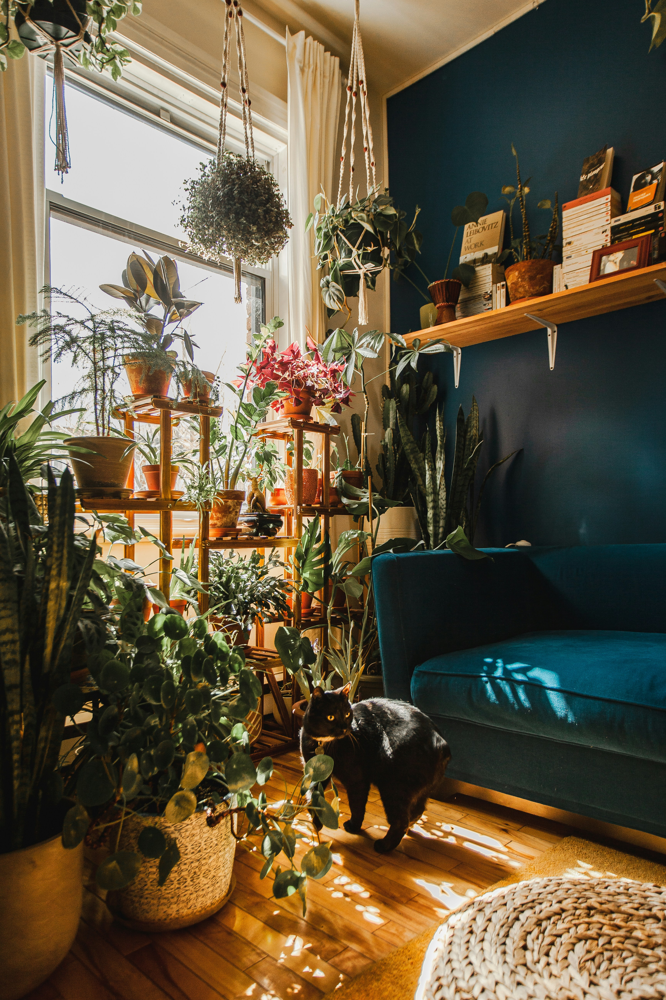

Resources
Useful things for better plants.
Checklists, trackers, helpful references, and practical tools for keeping your plant life a little more organized.

Plant Planning
Keep the basics together.
A few simple references can make plant care easier to remember, especially when your collection starts growing.
New plant parent checklist
A simple list of what to check, buy, and prepare before bringing home a new plant.
Plant care checklist
Keep watering, light, feeding, cleaning, and other routine tasks in one place.
Repotting checklist
Know what to gather and what to check before moving a plant into a new pot.
Seasonal plant care calendar
A simple reminder of the kinds of changes plants may need as the seasons shift.
Quick References
Answers you can glance at.
Understanding light levels
Learn the difference between low, medium, bright indirect, and direct light.
Explore → WaterWhen should I water?
A practical way to think about soil moisture instead of following a rigid schedule.
Explore → SpacePlant size & placement
A quick reference for matching plant size with shelves, tables, corners, and floors.
Explore →
Build Your Setup
The useful things worth having.
You don't need every plant gadget on the internet. Start with a few tools that actually make caring for plants easier.
Keep Track
A little organization goes a long way.
Useful for plant parents who like knowing what they watered, when they repotted, and what changed.
Watering tracker
Keep a simple record of watering so you can notice patterns without living by a schedule.
Open tool → JournalPlant journal
Record new plants, growth, repotting, propagation, and the little things you want to remember.
Open tool → PlannerPlant collection planner
Keep track of what you own and spot gaps before bringing home another plant.
Open tool →Make plant care easier
Keep the useful stuff close by.
Save the checklists, references, and tools that make taking care of your plants feel a little less like guesswork.